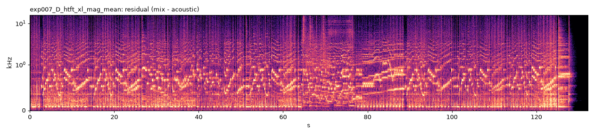
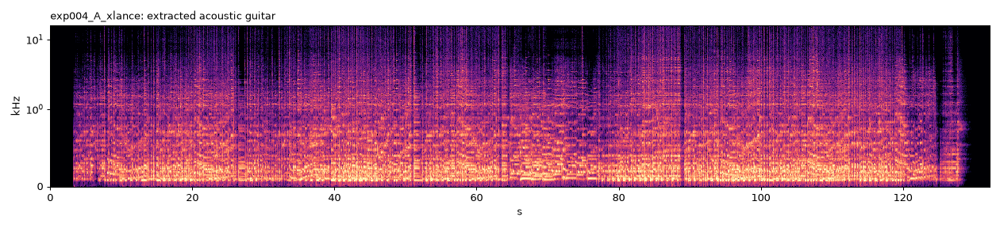
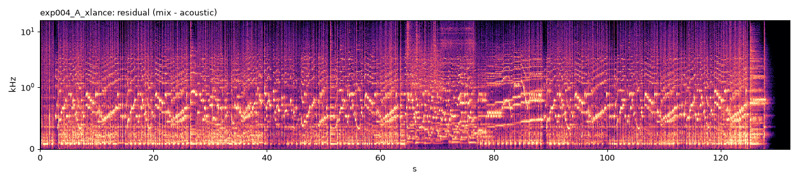
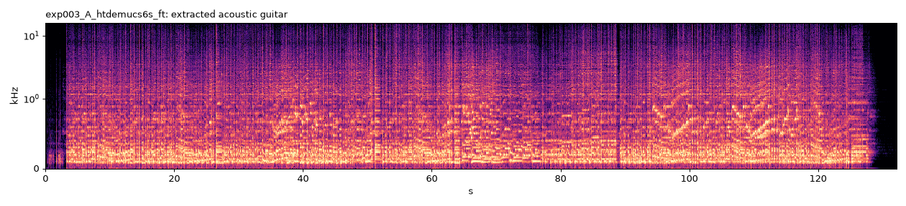
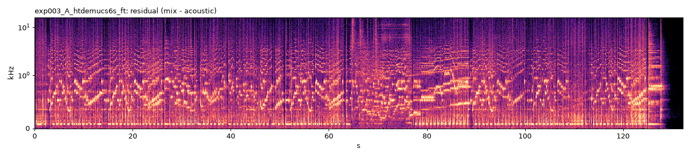

Target: ko-ko-ya “Frevo!” (user-supplied YouTube audio, AAC 44.1 kHz). No ground-truth stem exists for this song: the table shows ground-truth metrics from the synthetic validation set plus reference-free proxies (AST classifier) on the target. Click a spectrogram to seek; the players of one candidate play in sync (use the solo buttons to switch).
| experiment | strategy | val SDR | val SI-SDR | SIR | SAR | retention | leak dB | hard SDR | tgt guitar p | tgt max leak p | runtime s | _best |
|---|---|---|---|---|---|---|---|---|---|---|---|---|
| exp006_D_htft_xl_wave_mean | D | 3.637 | 0.980 | 6.120 | 8.586 | 0.583 | -10.748 | 3.702 | 0.133 | 0.031 | 627.935 | True |
| exp007_D_htft_xl_mag_mean | D | 3.608 | 0.962 | 6.015 | 8.604 | 0.587 | -10.629 | 3.671 | 0.133 | 0.031 | 627.935 | False |
| exp004_A_xlance | A | 3.117 | -0.525 | 6.470 | 8.398 | 0.595 | -10.354 | 3.294 | 0.141 | 0.030 | 579.329 | False |
| exp003_A_htdemucs6s_ft | A | 3.072 | 0.239 | 6.711 | 6.772 | 0.623 | -9.862 | 3.082 | 0.139 | 0.051 | 48.606 | False |
| exp001_A_htdemucs6s | A | 2.579 | -0.676 | 5.703 | 6.507 | 0.614 | -9.601 | 2.615 | 0.169 | 0.041 | 50.362 | False |
| exp002_A_becruily | A | 2.100 | -1.841 | 3.244 | 7.350 | 0.521 | -8.255 | 1.973 | 0.259 | 0.192 | 286.634 | False |
| exp008_D_htft_xl_mask_mean | nan | nan | nan | nan | nan | nan | nan | nan | nan | nan | False |
| champion | exp006_D_htft_xl_wave_mean |
|---|


Loudest extracted segments (check for leakage): 130s (17.0 dB rel. mix), 44s (-3.1 dB rel. mix), 42s (-3.3 dB rel. mix)
| experiment | exp006_D_htft_xl_wave_mean |
|---|---|
| strategy | D |
| models | {"htdemucs6s_gtrft": {"checkpoint": "htdemucs_6s", "sha256": "demucs:htdemucs_"}, "xlance_gtr": {"checkpoint": "gtr_mss.pth", "sha256": "813a92bd210e1fc7"}} |
| pipeline | [{"id": "m0_guitar", "model": "htdemucs6s_gtrft", "input": "mix", "params": {"num_overlap": 2, "precision": "bf16"}}, {"id": "m1_guitar", "model": "xlance_gtr", "input": "mix", "params": {"num_overlap": 2, "precision": "bf16"}}, {"id": "ens", "ensemble": ["m0_guitar", "m1_guitar"], "method": "wave_mean"}] |
| runtime_s | 627.9350414790003 |
| val SDR | val SI-SDR | SIR | SAR | retention | leak dB | hard SDR | tgt guitar p | tgt max leak p | runtime s |
|---|---|---|---|---|---|---|---|---|---|
| 3.637 | 0.980 | 6.120 | 8.586 | 0.583 | -10.748 | 3.702 | 0.133 | 0.031 | 627.935 |

Loudest extracted segments (check for leakage): 130s (17.0 dB rel. mix), 44s (-3.1 dB rel. mix), 42s (-3.3 dB rel. mix)
| experiment | exp007_D_htft_xl_mag_mean |
|---|---|
| strategy | D |
| models | {"htdemucs6s_gtrft": {"checkpoint": "htdemucs_6s", "sha256": "demucs:htdemucs_"}, "xlance_gtr": {"checkpoint": "gtr_mss.pth", "sha256": "813a92bd210e1fc7"}} |
| pipeline | [{"id": "m0_guitar", "model": "htdemucs6s_gtrft", "input": "mix", "params": {"num_overlap": 2, "precision": "bf16"}}, {"id": "m1_guitar", "model": "xlance_gtr", "input": "mix", "params": {"num_overlap": 2, "precision": "bf16"}}, {"id": "ens", "ensemble": ["m0_guitar", "m1_guitar"], "method": "mag_mean"}] |
| runtime_s | 627.9350414790003 |
| val SDR | val SI-SDR | SIR | SAR | retention | leak dB | hard SDR | tgt guitar p | tgt max leak p | runtime s |
|---|---|---|---|---|---|---|---|---|---|
| 3.608 | 0.962 | 6.015 | 8.604 | 0.587 | -10.629 | 3.671 | 0.133 | 0.031 | 627.935 |

Loudest extracted segments (check for leakage): 130s (17.0 dB rel. mix), 44s (-3.1 dB rel. mix), 42s (-3.3 dB rel. mix)
| experiment | exp004_A_xlance |
|---|---|
| strategy | A |
| models | {"xlance_gtr": {"checkpoint": "gtr_mss.pth", "sha256": "813a92bd210e1fc7"}} |
| pipeline | [{"id": "guitar", "model": "xlance_gtr", "input": "mix", "params": {"num_overlap": 2, "precision": "bf16"}}] |
| runtime_s | 579.3289307510004 |
| val SDR | val SI-SDR | SIR | SAR | retention | leak dB | hard SDR | tgt guitar p | tgt max leak p | runtime s |
|---|---|---|---|---|---|---|---|---|---|
| 3.117 | -0.525 | 6.470 | 8.398 | 0.595 | -10.354 | 3.294 | 0.141 | 0.030 | 579.329 |


Loudest extracted segments (check for leakage): 42s (-2.5 dB rel. mix), 44s (-2.7 dB rel. mix), 40s (-3.0 dB rel. mix)
| experiment | exp003_A_htdemucs6s_ft |
|---|---|
| strategy | A |
| models | {"htdemucs6s_gtrft": {"checkpoint": "htdemucs_6s", "sha256": "demucs:htdemucs_"}} |
| pipeline | [{"id": "guitar", "model": "htdemucs6s_gtrft", "input": "mix", "params": {"num_overlap": 2, "precision": "bf16"}}] |
| runtime_s | 48.606110727999976 |
| val SDR | val SI-SDR | SIR | SAR | retention | leak dB | hard SDR | tgt guitar p | tgt max leak p | runtime s |
|---|---|---|---|---|---|---|---|---|---|
| 3.072 | 0.239 | 6.711 | 6.772 | 0.623 | -9.862 | 3.082 | 0.139 | 0.051 | 48.606 |


Loudest extracted segments (check for leakage): 130s (23.0 dB rel. mix), 110s (-1.9 dB rel. mix), 112s (-2.3 dB rel. mix)